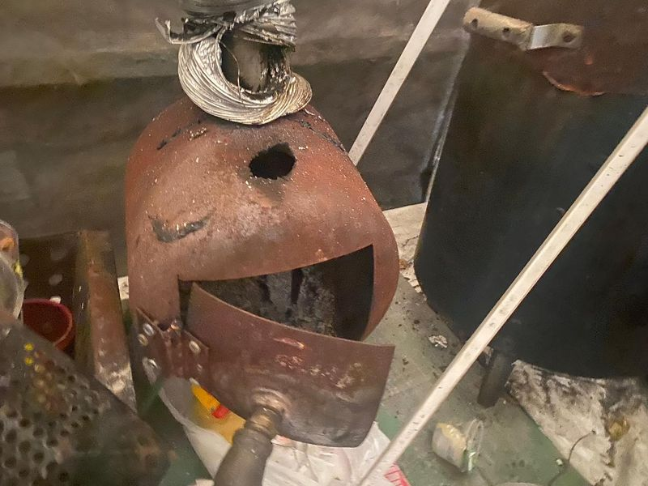

Timeline photos
This is a fabricated wood burning stove that I bought from a homeless friend of mine.
I think he sold it to me because it wasn’t working. He said that it smokes up his tent terribly and it has no airflow to keep the fire going.
I think a lot about heating for outdoor living in Akron over the winter.
Eventually one of three things is going to happen: we are either going to let people live outside in structured camps or we are going to arrest them and put them in jail or a third option is a blend of the two: forced concentration camps.
I believe we need to give people space to live in ways that are appropriate for them while not intruding on other people’s lives. Structured homeless camps can do that.
At any rate: this year we are still thinking about heating in tent camps.
I don’t like propane heaters because they are expensive to run and then I become a propane delivery service. Those tanks are so freaking heavy to carry through really difficult terrain.
I like this stove made out of an old propane tank. But I think the prototype is right: it’s not going to work for a tent.
I think I’m going to go with burn barrels again this year. You can burn trash that has collected all year, cutting vent fins in the side is really easy.
If anyone has access some 50 gallon drums, could you let me know?
I’d like to build 12 this year. And I’ll probably hire homeless people to make them. So it’s a good little work project.
#homelessness #homelesslivesmatter
Place: Akron, Ohio (41.0732, -81.5179)
Address: Akron, OH 44301